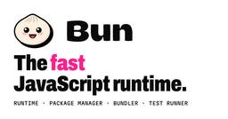
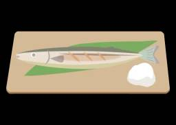
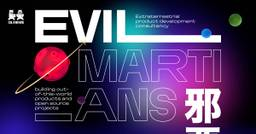
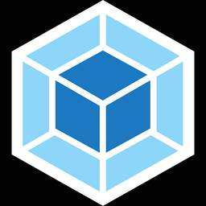
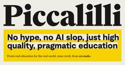
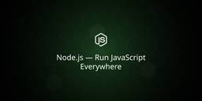
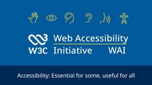
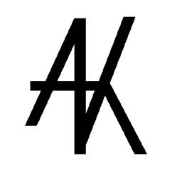
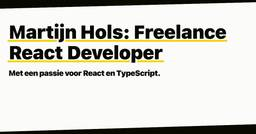
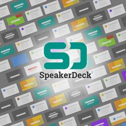

ブログ一覧（更新順）

bun.com https://bun.com
Bundle, install, and run JavaScript & TypeScript — all in Bun. Bun is a fast JavaScript runtime & toolkit with a bundler, test runner, and npm-compatible package manager built in.
10時間前

azukiazusa のテックブログ2 https://azukiazusa.dev
azukiazusaのテックブログ2です。週に1回 Web 開発に関する記事をお届けします。フロントエンドに関する分野の記事が中心です。
11時間前

The GitHub Blog https://github.blog/
Updates, ideas, and inspiration from GitHub to help developers build and design software.
1日前
Aikido Security's Blog https://www.aikido.dev
Continuous, autonomous security that gets developers back to building.
1日前


Cloudflare Blog https://blog.cloudflare.com/
Technical deep dives, product updates, and insights from the teams that are helping to build a better Internet.
2日前
LINEヤフー Tech Blog (LY Corporation Tech Blog https://techblog.lycorp.co.jp
LINEヤフー株式会社のサービスを支える、技術・開発文化を発信しています。
3日前
The Astro Blog https://astro.build/
Astro builds fast content sites, powerful web applications, dynamic server APIs, and everything in-between.
3日前
Shopify Engineering https://shopify.engineering
Shopify powers millions of businesses in more than 175 countries with essential commerce infrastructure. Our engineers and developers work on challenging and impactful projects spanning frontend, back...
3日前
ICS MEDIA https://ics.media/
インタラクションデザインを得意とするウェブ制作会社ICS(アイシーエス)の技術情報メディア。HTMLやCSS、JavaScriptを中心としたフロントエンド開発の情報やウェブデザイン入門記事を掲載。
3日前
Step Security Blog https://www.stepsecurity.io
Detect, prevent, and respond to software supply chain attacks. End-to-end protection for AI agents, developer machines, open source packages, and CI/CD pipelines.
3日前

Evil Martians https://evilmartians.com/chronicles
We’ve got articles for junior and experienced developers, case studies for startup founders and managers, and thorough technical deep dives into unexpected terrain. No matter where you’re coming from,...
4日前
VoidZero https://voidzero.dev/
Our mission is to make the next generation of JavaScript developers more productive than ever before
4日前
CSS-Tricks https://css-tricks.com
CSS-Tricks is where folks around the world come to learn about front-end code and everything related to it, including HTML, CSS, and yes, CSS.
5日前

Articles on Smashing Magazine — For Web Designers And Developers https://www.smashingmagazine.com/
Magazine on CSS, JavaScript, front-end, accessibility, UX and design. For developers, designers and front-end engineers.
5日前

Ahmad Alfy https://alfy.blog/
This is my blog where I write about software engineering, programming, and other things that interest me.
6日前



webpack Blog https://webpack.js.org/blog/
webpack is a module bundler. Its main purpose is to bundle JavaScript files for usage in a browser, yet it is also capable of transforming, bundling, or packaging just about any resource or asset.
8日前

Piccalilli - Everything https://piccalil.li/
Premium courses, articles, links and newsletters that give you a real-world, industry specific education that actually matters and that will far outlive any hype and help you level up your career.
8日前
Polypane Blog https://polypane.app
Polypane has everything a browser has, plus all the tools you need to build responsive, fast, accessible, and SEO-friendly websites and apps, with multi-viewport synchronised previews and accessibilit...
9日前
CKEditor Ecosystem Blog https://ckeditor.com
Rock-solid, Free WYSIWYG Editor with Collaborative Editing, 200+ features, Full Documentation and Support. Trusted by 20k+ companies.
9日前

Node.js Blog https://nodejs.org/en
Node.js® is a free, open-source, cross-platform JavaScript runtime environment that lets developers create servers, web apps, command line tools and scripts.
10日前
Electron Blog https://electronjs.org/blog
Keep up to date with what's going on with the Electron project
12日前

Mozilla Hacks – the Web developer blog https://hacks.mozilla.org/
Mozilla Hacks is written for web developers, designers and everyone who builds for the Web. Hacks is produced by Mozilla's Developer Relations team and features hundreds of posts from Mozilla ...
12日前
Nicolas Charpentier's Blog https://charpeni.com
Software Engineer focused on frontend infrastructure and developer tooling. I write about TypeScript, React, React Native, GraphQL, Apollo Client, CI/CD, and shipping reliable code.
15日前
Blackboard Blog https://blackboard.sh/blog/
Insights and updates from deep inside the Blackboard lab
16日前
Company | The JetBrains Blog https://blog.jetbrains.com
Developer Tools for Professionals and Teams
18日前
Better Auth Blog https://better-auth.com/blog
Latest updates, articles, and insights about Better Auth
20日前
Jad Joubran https://jadjoubran.io
I'm Jad Joubran, an independent JavaScript and Web Performance Consultant based in Amsterdam. I teach the next generation of ambitious developers on my own interactive learning platform.
21日前
HubSpot Product Blog (Live) https://product.hubspot.com/blog
The HubSpot Product Blog is where we riff about topics of interest to us from engineering, to UX, to product management and beyond.
22日前
Playful Programming's Atom Feed https://playfulprogramming.com
Learning programming from magically majestic words. A place to learn about all sorts of programming topics from entry-level concepts to advanced abstractions
25日前
Valibot Blog https://valibot.dev/blog/
Official announcements, project updates and insightful content directly from the Valibot core team. We're excited to share our journey with you! Let's validate together!
1ヶ月前
The Nuxt Blog https://nuxt.com/blog
Read the latest news about all Nuxt solutions, from framework announcements to integration tutorials.
1ヶ月前
Motion Magazine https://motion.dev/magazine
Articles, interviews and essays on animation, the web platform, and the craft of motion design.
1ヶ月前

Web Accessibility Initiative (WAI) https://www.w3.org/WAI/
Accessibility resources free online from the international standards organization: W3C Web Accessibility Initiative (WAI).
1ヶ月前
Elio Capella Sánchez's blog https://eliocapella.com/
Head of Engineering at Filestage.io. Technology leader and Computer Science Engineer with over 17 years of experience in software development and startup environments.
2ヶ月前

Josh Comeau's blog https://www.joshwcomeau.com/
Friendly articles and tutorials for front-end web developers. ❤️
2ヶ月前
Trevor I. Lasn, Building 0xinsider https://www.trevorlasn.com
Building 0xinsider.com, the intelligence layer for prediction markets. Discover what's moving, see who's behind it, and find the edge before the crowd. Produ...
2ヶ月前
</> htmx - high power tools for html https://four.htmx.org/
htmx gives you access to AJAX, CSS Transitions, WebSockets and Server Sent Events directly in HTML, using attributes, so you can build modern user interfaces with the simplicity and power of hypertext
2ヶ月前
John James https://blog-on-cf.john-usa-james.workers.dev/
Notes on web, JS/TS, CI/CD, and experiments.
2ヶ月前

developer.chrome.com: Blog https://developer.chrome.com/blog/
Tin tức mới nhất từ nhóm Quan hệ với nhà phát triển Chrome
2ヶ月前

MDN Blog https://developer.mozilla.org/en-US/blog/
The MDN Web Docs site provides information about Open Web technologies including HTML, CSS, and APIs for both Web sites and progressive web apps.
3ヶ月前
Project Wallace Blog https://www.projectwallace.com/blog
You want to learn more about the workings of Wallace? You’ve come to the right place! Product updates, in depth analysis and more.
3ヶ月前

Developer Way https://www.developerway.com
How things actually work. Deep dives, investigations, research.
3ヶ月前
SpiderMonkey JavaScript/WebAssembly Engine https://spidermonkey.dev/
SpiderMonkey is Mozilla’s JavaScript and WebAssembly Engine, used in Firefox, Servo and various other projects. It is written in C++ and Rust.
4ヶ月前
Tailwind CSS Blog https://tailwindcss.com/blog
All the latest Tailwind CSS news, straight from the team.
4ヶ月前
Epic Web Dev https://www.epicweb.dev
Learn full-stack web development with Kent C. Dodds and the Epic Web instructors. Learn TypeScript, React, Node.js, and more through hands-on workshops.
4ヶ月前
MUI - Blog https://mui.com/blog
Follow the MUI blog to learn about new product features, latest advancements in UI development, and business initiatives.
5ヶ月前
Willy Brauner - Journal https://willybrauner.com
front-end developer engineering design systems & interactive experiences.
5ヶ月前

Adnan Khan's Security Research Blog https://adnanthekhan.com/
Security research blog focusing on CI/CD security, software supply chain attacks, and developer tooling vulnerabilities.
6ヶ月前
CodSpeed Blog https://codspeed.io/blog
Master the art of continuous benchmarking and automated performance testing with expertise, strategies, and real-world experiences from our engineering team.
6ヶ月前
React Blog https://react.dev/
React is the library for web and native user interfaces. Build user interfaces out of individual pieces called components written in JavaScript. React is designed to let you seamlessly combine compone...
6ヶ月前
WebAssembly News https://webassembly.org/
WebAssembly (abbreviated Wasm) is a binary instruction format for a stack-based virtual machine. Wasm is designed as a portable compilation target for programming languages, enabling deployment on the...
8ヶ月前
Web Fragments’s Blog https://web-fragments.dev
🚀 An incremental, low-risk, high ROI approach, to building micro-frontends.
9ヶ月前
Jacob 'kurtextrem' Groß https://kurtextrem.de/
Jacob 'kurtextrem' Groß portfolio overview, including links to blog posts, projects, research and tools published.
1年前
James Ross https://jross.me/
Web security and performance enthusiast. CTO and Co-founder at Nodecraft.com
1年前
Whatever, Jamie https://buttondown.com/whatever_jamie
Pulling himself away from opensource to do something creative for once, this is the newsletter in which Jamie talks about Whatever. From news, to ideas, to hopes, to memories, anything goes. He said h...
1年前

Blog by Martijn Hols https://martijnhols.nl
Met 20+ jaar full-stack ervaring, waarvan 8+ jaar gespecialiseerd in React, help ik teams met complexe front-end vraagstukken en architectuur. Laten we kennismaken!
1年前

zaru (@zaru_sakuraba) on Speaker Deck https://speakerdeck.com
Speaker Deck is the best way to share presentations online. Simply upload your slides as a PDF, and we’ll turn them into a beautiful online experience. View them on SpeakerDeck.com, or share them on a...
2年前
The Oxidation Compiler Blog https://oxc.rs/
A collection of high-performance JavaScript tools written in Rust
3年前
Ahmad Shadeed https://ishadeed.com/
Deep-dive CSS articles, modern CSS and visual CSS explanations.
7年前
Comments on: Making complex web apps faster https://blogs.windows.com/msedgedev/2025/12/09/making-complex-web-apps-faster/
On the web, speed is everything. The responsiveness of your browser, the time it takes for a web app to appear, and how quickly that app handles user interactions all directly impact your experience a...
-
デジタル庁ニュース一覧 https://digital-agency-news.digital.go.jp/
〈デジタル庁ニュース〉は、デジタル化に伴う社会や暮らしの変化にフォーカスした、デジタル庁が運営するメディアです。あらゆる立場、垣根を超えて、ここを訪れるすべての人々と相互に情報共有できるコミュニティの創出を目指しています。
-